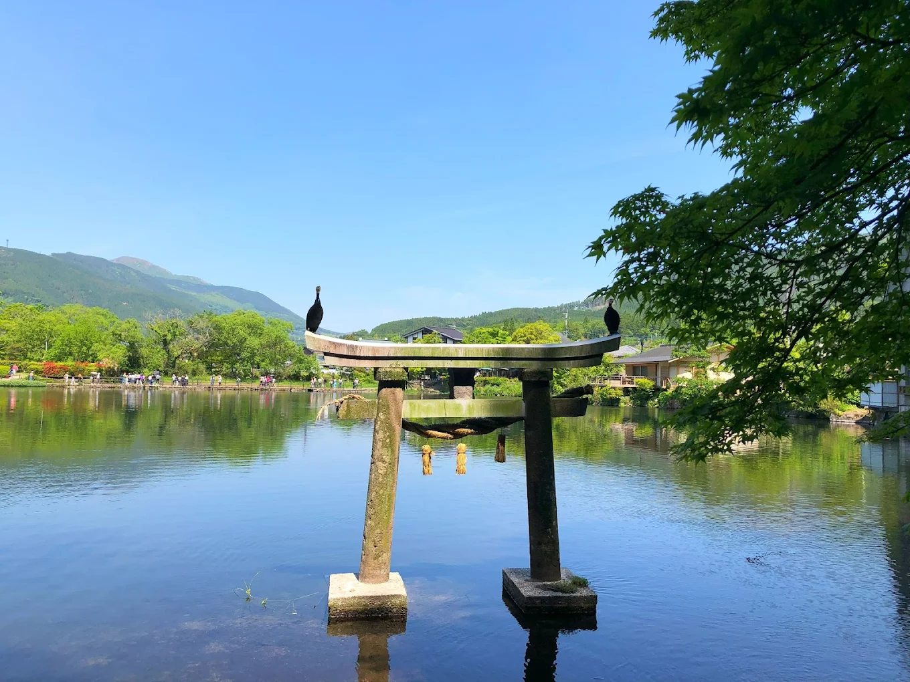

旅館でゆっくり！湯布院旅のしおり
金鱗湖
金鱗湖や由布岳など、自然に癒されるスポットがたくさん！
湯の坪街道
由布院駅から金鱗湖へ向かう約800mのストリート。レトロな街並みとおしゃれなカフェ、スイーツ店、雑貨店が軒を連ねていて、食べ歩きをしながら散策するのがおすすめ！
artegio
カフェとチョコレートショップが併設された音楽をテーマにした美術館
ノルウェイの森
長毛種の猫に触れ合える猫カフェ。猫雑貨のお店『由布院の猫屋敷』2階にあるにゃ🐈
湯布院保護猫フォレスト
保護猫と触れ合えるテーマパーク(仮)。今は猫カフェとレストランと雑貨屋さん、宿泊施設のみ空いてて今後はアトラクションができるそうにゃ🐈
石畳の驛 つるや
湯平温泉付近にある、石畳の道に面した湯平観光の総合施設。大人気のゆのひらんアイス・ビールなどのお酒を販売しているそう！
湯布珈琲
珈琲廻廊の系列店！絶対行きたい✨
5toku
抹茶ラテが美味しいお店。日本茶やほうじ茶も販売してたテイクアウト専門店
Pizzeria 櫟の丘
ピザやパスタ、お肉料理があって、味は本当に美味しいけど量が多いので注意！
茶房 天井棧敷
とにかく店内がおしゃれなお店。カツサンドとビーフシチューが有名みたい！
地酒の店はかり屋
大分県を代表する名酒や地酒、酒器やつまみ類が並んでいるお店。宿で乾杯する用のお酒調達にいいかも♡
まずは改めて1年間一緒に居てくれてありがとう！
旅行の計画立てた時からすっごく楽しみにしてきたから、
今回どんな旅になるか楽しみだね。
念願の温泉にも入れるし、ふたりでゆっくり楽しもう♨️
心も体もリラックスできる、そんな旅になりますように。
拓摩くん、いつもありがとう。これからもよろしくね。